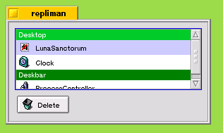

| Introduction |
Repliman is a simple replicant manager for BeOS. If you have problems trying to remove stubborn replicants from your desktop or deskbar then this is the program for you!
The latest version (v0.1a) can be downloaded here.
| Usage |
When you run repliman you will get a screenshot looking something like this (although it will depend on what replicants you have running on your system):

The interface is quite simple - there is a single list containing the names and application icons of the replicants that are on the desktop and the deskbar, and a button to delete the selected replicant in the list.
In the screen shot the desktop has two replicants: Luna Sanctorum and Clock. Luna Sanctorum has a special icon () next to it's name because it is a "zombie", i.e. the application for this replicant has been deleted or BeOS cannot find it.
The screen shot also has one replicant on the deskbar: ProcessController. Note, if you have installed the Japanese input server then this will appear in the list but without an icon or a name. If you delete this replicant by mistake do not worry it will reappear automatically next time you run BeOS.
Once you have deleted a replicant it will only stay deleted if you quit the deskbar or tracker normally. So, if the tracker crashes or you kill it then it may not update the file it uses to store information about the replicants and will just reload them when it restarts.
Note, if you have very stubborn replicants or they are causing the Tracker or Deskbar to crash then I suggest you look at one of the links below for more information.
| Resources |
FAQs at www.be.com
BeTips has a tipon when replicants go bad here.
The BeOS Bible by Scot Hacker (or of course the paper version!).
| History |
| v0.1a | 30/04/2001 | This is the first version of repliman and it is probably the last unless anyone has any suggestions (email me here). |
| Disclaimer |
The repliman package (all files in the archive) and web contents are © Robert Clarke. All rights reserved. It is freely usable and freely distributable for non-commercial purposes as long as the original archive remains unchanged. In no event shall I be held liable for any damages arising from the use of this software.
| Final Words |
I have tested this program on a number of different PCs and the replicants that I have, however I cannot assume that repliman will work in all cases. Look at the resources section for more methods of removing replicants, and of course if you have a question, a problem, or a request please tell me via e-mail at daikumo@hotmail.com.